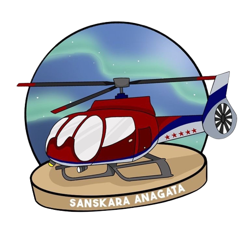

Selamat Datang
Di Website Resmi
Kami organisasi siswa yang aktif dalam kegiatan sekolah. Temukan informasi tentang kami dan program sekolah di sini. Terima kasih telah berkunjung!
Tentang OSIS
OSIS (Organisasi Siswa Intra Sekolah)
Seperti halnya organisasi lainnya, OSIS juga memiliki struktur kepengurusan di mana pemilihannya dilakukan secara demokratis oleh siswa dalam lingkup sekolah. OSIS dibimbing oleh seorang guru yang telah dipilih sekolah dan memiliki keterampilan dalam bidang tertentu.
Latar belakang pembentukan OSIS ini adalah untuk menyiapkan siswa-siswa di usia remaja agar mampu memperjuangkan bangsa dengan upaya pemberian pelatihan kepemimpinan, keterampilan, daya kreasi, kesegaran jasmani, patriotisme, dan idealisme.
Pemerintah dalam hal ini berperan besar menetapkan nama organisasi menjadi OSIS dengan empat jalur pembinaan siswa yakni; organisasi kesiswaan, latihan kepemimpinan, kegiatan ekstrakurikuler, kegiatan wawasan wiyatamandala.
1. Meningkatkan generasi penerus yang beriman dan bertaqwa.
2. Membangun landasan kepribadian yang kuat.
3. Memfasilitasi siswa dalam menyalurkan aspirasi, mengekspresikan kreativitas, serta mampu berkontribusi untuk hal-hal positif.
4. Memaksimalkan potensi siswa untuk bisa meraih prestasi yang membanggakan diri dan sekolah.
5. Melatih keterampilan siswa dalam bersosialisasi dan bernegosiasi.
6. Membantu siswa dalam memahami dan menghargai lingkungan sekitar serta nilai moral dalam mengambil keputusan yang tepat.
7. Meningkatkan sikap sportif, jujur, disiplin, bertanggung jawab, dan kerjasama secara mandiri, berpikir logis, dan demokratis.
1. Sebagai satu-satunya organisasi yang resmi di sekolah, OSIS berfungsi sebagai wadah kegiatan siswa di sekolah. Didukung dengan pembinaan yang baik, diharapkan OSIS bisa mencapai tujuan yang telah disebutkan.
2. OSIS berfungsi sebagai motivator bagi siswa untuk melakukan kegiatan positif, menggali minat dan bakat, serta berusaha mengembangkannya melalui kegiatan yang diselenggarakan oleh OSIS maupun ekstrakurikuler.
3. OSIS merupakan organisasi internal yang berfungsi untuk mencegah siswa dari melakukan perbuatan negatif dan kurang terpuji. OSIS juga membantu mengamankan sekolah dari ancaman yang mungkin saja datang, baik dari dalam maupun luar.
Profile
SANSKARA ANAGATA
Sanskara Anagata adalah nama OSIS SMAN 3 Bogor angkatan 2022.
Filosofi nama dan logo OSIS Sanskara Anagata bisa kalian lihat dengan klik dibawah ini.
Visi dan Misi
Visi
Menjadikan osis SMAN 3 Bogor sebagai organisasi profesional yang dapat menciptakan ruang lingkup nyaman dan positif bagi seluruh warga SMAN 3 Bogor, dengan harapan terwujudnya visi misi sekolah dan lingkungan yang berkualitas.
Misi
Menjaga dan mengutamakan aspek keimanan dan ketakwaan untuk
menciptakan lingkungan yang religius & pribadi yang berkarakter
mulia.
Menciptakan sarana pengembangan inovatif bagi seluruh siswa/i SMAN
3 Bogor untuk dapat mengasah bakat, minat, maupun potensi diri
agar terwujudnya lingkungan yang berprestasi.
Meningkatkan hubungan & koordinasi yang harmonis juga kekeluargaan
yang erat antar sesama rekan kerja, OSIS & MPK, maupun seluruh
komponen di SMAN 3 Bogor.
Menjalankan dan mengoptimalkan program kerja dan berinovasi untuk
menciptakan program kerja baru dengan mengedepankan rasa
kekeluargaan dan profesionalitas.
Kepengurusan
Kepengurusan OSIS 2022/2023
Muhammad Bintang Paradise
Ketua OSIS 1
Aletha Serafina Ramadhani Nugraha
Ketua Umum OSIS